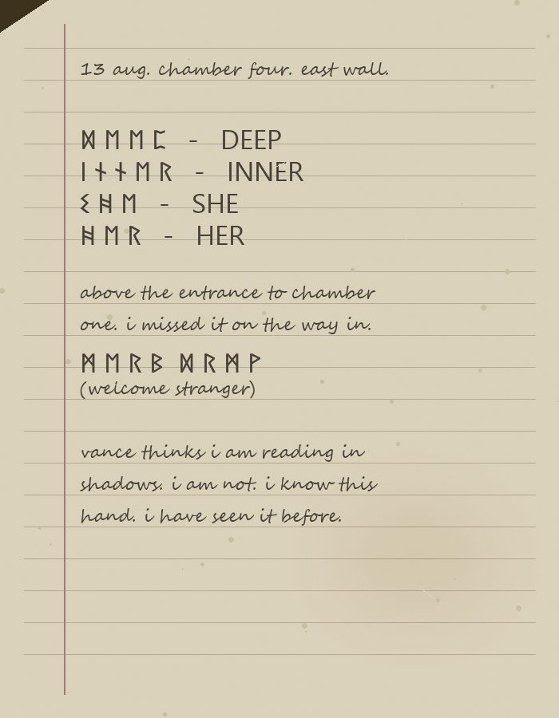

The Kade Notebook
This small brown notebook was found in the tent Elena Kade shared with M. Whitfield at the surface camp. It was not on the survey list of Peter Harrow's recovered equipment. It came to me through the same friend of the Whitfield family who sent me M.'s letters. I have been careful with it.
The notebook contains sketches of symbols and their partial translations. Kade's method appears to have been to record a symbol, note where she found it, and then attempt a translation only when she felt confident. Many symbols are recorded without any translation at all.
I have preserved her page order and her spelling. Her handwriting is neat, upright, and small.

a sample scan of the notebook. this page is from 13 august 1962. transcribed in full below.
Notebook pages, transcribed
1st August 1962. Manchester.
M. writes again. She wants me to come. I go on the 4th.
The system is at Kettlewell. She sends the coordinates: 54.176 north, 2.043 west. She has been there twice already. The shaft is on the west face of a small ridge above the village.
I take my notebook. I take the older grammar and the two folk dictionaries. I do not take the Nottingham thesis. It has been six years.
5th August. Kettlewell village.
Arrived last night. The village is small and the pub keeper is kind. He remembers M. He asked if I was staying long. I said only a week. He asked how many were in the party. I said four. He nodded.
M. is thinner than she was at Nottingham. Vance is polite. Harrow is quiet. All three are focused on their equipment.
None of them know I am here to look at the walls.
8th August. Surface camp.
The shaft is where M. said. I have walked the outcrop three times. There is no marking above ground, nothing that would suggest the mouth is more than a hole. This is unusual. Every other pre-Norse site I have visited has some kind of warning at the surface. This one does not.
Unless the whole ridge is the warning.
12th August. Chamber One.
We came down at 09:14. Four of us. Harrow first.
The chamber is old. Older than the survey suggests. The walls are worked. Someone shaped this room, a long time ago.
At the north end of Chamber One, above the passage that leads down to Two, this is carved:
ᛞ ᛖ ᛖ ᛈ
I have seen this before. It appears in a Cumbrian folk grammar my supervisor showed me in 1958. It means DEEP or DOWN. It is a marker.
13th August. Chamber Four.
The east wall of Chamber Four is covered. I have sat with it for two hours.
I have recorded twenty-three separate symbols. Some I recognise. Some I do not. Below are the ones I am willing to commit to.
Symbol: ᛁ ᚾ ᚾ ᛖ ᚱ
Meaning: INNER. It is used for a place further from the entrance. Vance calls this Chamber Four but the wall calls it something like the FIRST INNER PLACE.
Symbol: ᛊ ᚻ ᛖ
Meaning: SHE. The pronoun. Only ever this pronoun. There is no HE or IT in what I have seen.
Symbol: ᚻ ᛖ ᚱ
Meaning: HER. Object form of SHE.
Symbol: ᛗ ᛖ ᚱ ᛒ ᛞ ᚱ ᛗ ᚹ
Meaning: WELCOME STRANGER. Two words joined. I saw this at the entrance to Chamber One as well, in smaller carving I missed on the way past. I do not like that we walked under it.
Vance thinks the whole thing is opportunistic reading. He is being kind about it. I am not reading opportunistically. I know this hand. I have seen it before.
14th August. Chamber Five.
Vance said I was overruled. I was not. I did not vote against going deeper. I said we should not go deeper, which is different.
More carving here. The chamber is a curved oval and the writing follows the curve. It reads, in the order it curves, WEAR OUR FACE. WE COME BACK WITH HER.
Symbol: ᚹ ᛖ ᚨ ᚱ
Meaning: WEAR. Verb.
Symbol: ᛟ ᚢ ᚱ
Meaning: OUR.
Symbol: ᚠ ᚨ ᚲ ᛖ
Meaning: FACE.
Symbol: ᚹ ᛖ
Meaning: WE.
Symbol: ᛒ ᚨ ᚲ ᚲ
Meaning: BACK. As in RETURN. Not as in SPINE.
I have not shown this translation to the others. I do not want them to know yet. I need to see what Chamber Six looks like first.
15th August. Above Chamber Six.
I am writing at the top of the shaft to Six. Peter has gone first. The shaft is a spiral. It turns as it goes down.
The full sequence of the sign at the mouth of the shaft:
ᛊ ᚻ ᛖ ᚹ ᛖ ᚨ ᚱ ᛟ ᚢ ᚱ ᚠ ᚨ ᚲ ᛖ. ᚷ ᛟ ᛞ ᛖ ᛖ ᛈ ᚨ ᚾ ᛞ ᚠ ᛁ ᚾ ᛞ ᚻ ᛖ ᚱ.
The new words I have not seen before are these:
Symbol: ᚷ ᛟ
Meaning: GO. I am confident.
Symbol: ᚨ ᚾ ᛞ
Meaning: AND. Everywhere in every dialect of this family. Always the same.
Symbol: ᚠ ᛁ ᚾ ᛞ
Meaning: FIND. From context.
I will translate the sequence in full when I have my quiet.
[LAST PAGE. UNDATED.]
She wears our face.
I am going down.
M. do not follow me.